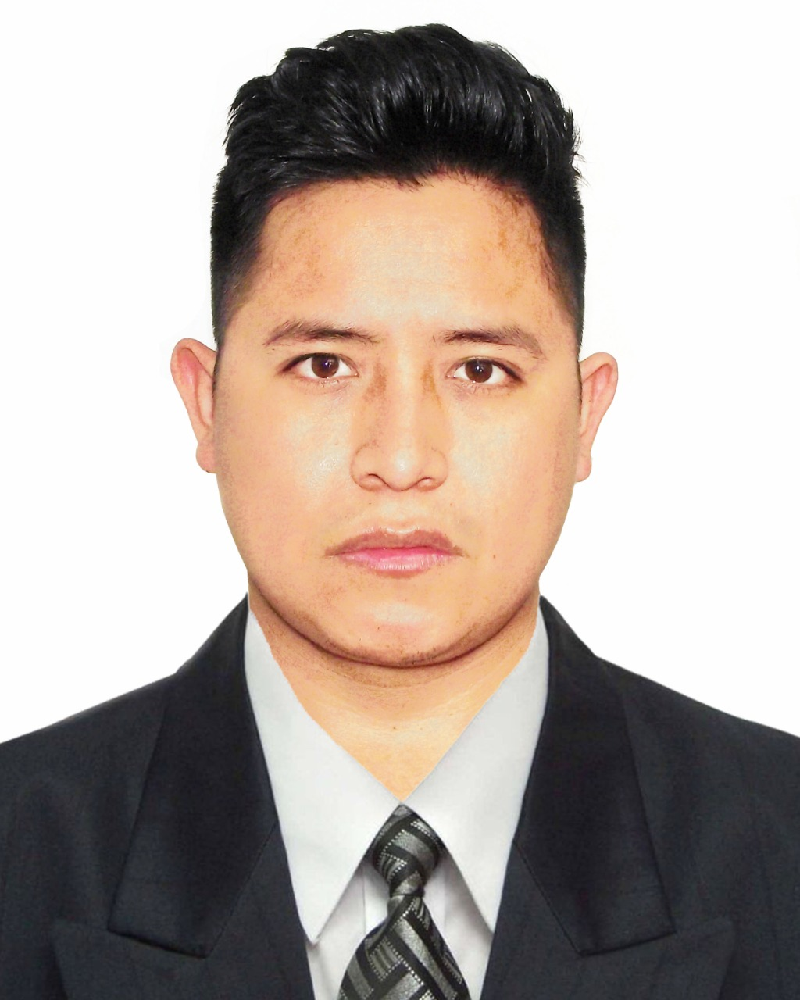

About Me
My name is Jarom and I go by Melvin. I was born in Perú and live with my family in Lima. I am currently working as a freelander software developer at home . My wife Cinthia is my inspiration I love her, we married in februery 2023 . I love to travel and I love to learn new things.
Toloria, Madagascar

Peru is a country in South America that encompasses a section of the Amazon forest and Machu Picchu, an ancient Inca city high in the Andes. The region around Machu Picchu, including the Sacred Valley, the Inca Trail and the colonial city of Cusco, is rich in archaeological sites. On Peru's arid Pacific coast lies Lima, the capital, with a preserved colonial center and important collections of pre-Columbian art.